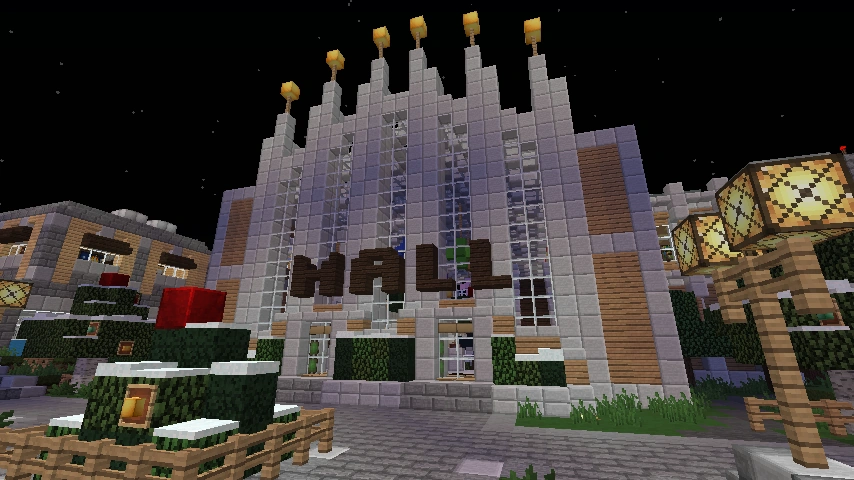

Twin Pines Mall
A shopping center whose name recalls the mall in Back to the Future.
Location and arrival
Twin Pines Mall is a shopping center in Uptown, presented in the community description as Broville’s most visited mall. The metro blue line reaches the heart of the complex, with a dedicated station between Campus and Canals East.
Construction and name
The community history places construction in 1930–1931 under the name Lonly Pine Mall. When director Richard J. Pine had twins, he reportedly changed the name to Twin Pines Mall. The name also recalls the mall in Back to the Future.
Gallery



See also
Sources and references
- v11.4.4 maps, signs, books and items World records
- Twin Pines Mall · Broville Wiki Community archive
Text adapted and expanded from Twin Pines Mall (contributors and history, revision 4909). Adapted text is available under CC BY-SA 3.0.